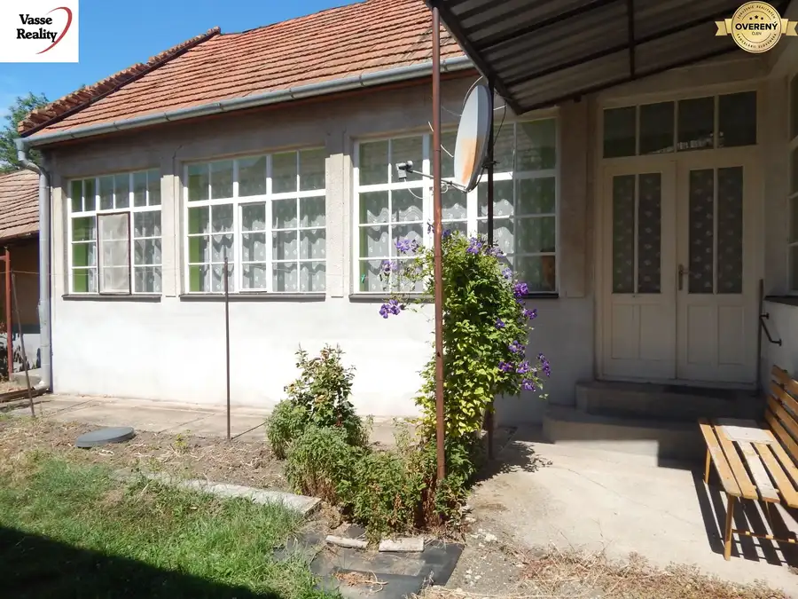
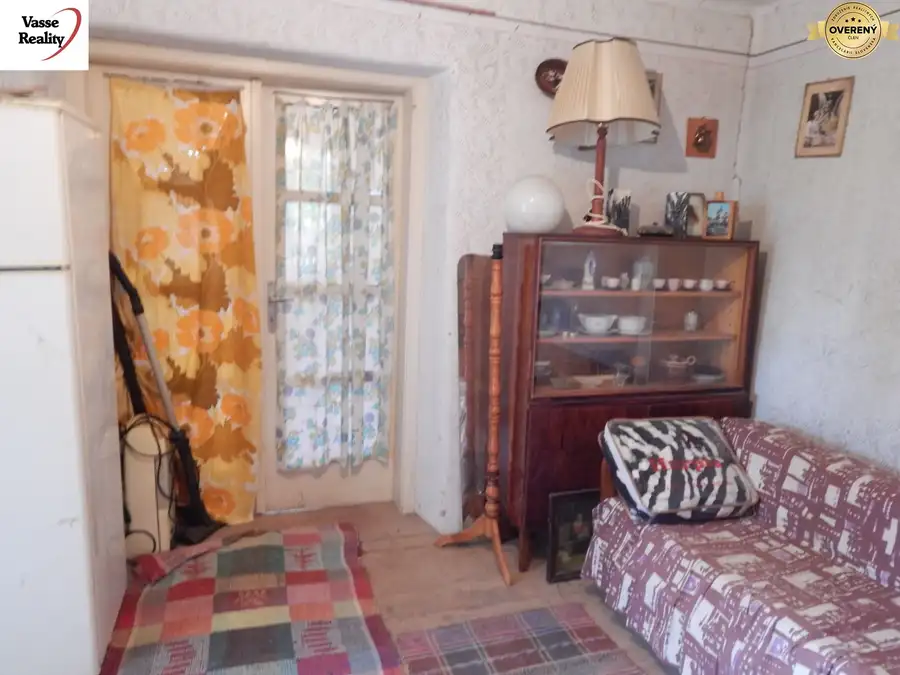
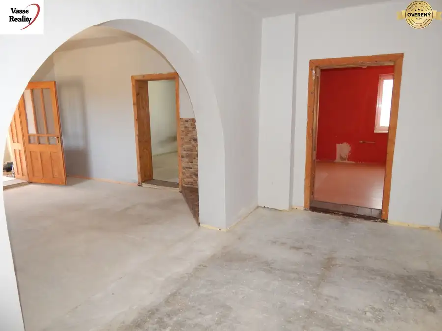

Na predaj 4.izb .dom - chalupa v Brutoch - pozemok 741 m2.
Bruty
- Dispozícia4-izbový
- Plocha130 m²
- Poschodie0.
- Stavnutná rekonštrukcia
- Vlastníctvoosobné
O nehnuteľnosti
Vasse Reality Vám ponúka na predaj 4-izbový rodinný dom v obci Bruty, vhodný aj ako chalupa , situovaný na pozemku s celkovou výmerou 741 m².
Dispozícia: chodba, 4 izby, kuchyňa, kúpeľňa s WC, špajza, komora
Pôvodný dlhý sedliacky dom bol postavený približne pred 100 rokmi z nabíjaniny. V 60. rokoch boli k domu pristavané ďalšie dve izby z tehál. Nehnuteľnosť je v pôvodnom stave a vyžaduje kompletnú rekonštrukciu, prípadne je vhodná aj na zbúranie a následnú výstavbu nového domu.
Stav nehnuteľnosti:
Dom má pôvodnú strechu pokrytú škridlou. Strecha aj strop domu si vyžadujú výmenu. Jedna strana strechy je poškodená, v dôsledku čoho došlo k poškodeniu stropu v kúpeľni a komore. Poškodený je aj rebrík vedúci na povalu.Okná, dvere, steny aj podlahy sú pôvodné. Podlahy sú v dvoch izbách pôvodné palubovky a v ostatných betónové.
V dome je zavedená voda do kuchyne a kúpeľne. Kúpeľňa je vybavená vaňou a WC. Odpad je riešený žumpou nachádzajúcou sa na dvore. Kúrenie bolo v minulosti zabezpečované pecou na tuhé palivo. Do jednej z izieb je zavedený plyn. Na pozemku sa nachádza vŕtaná studňa. Obecná voda na pozemok nie je zavedená.
Nehnuteľnosť sa v súčasnosti upratuje a čistí. Predáva sa vyprataná, v stave, v akom sa nachádza.
Pozemok a exteriér:
Celková výmera pozemku je 741 m², z toho záhrada má približne 390 m².Pozemok je kompletne oplotený. Na dvore je priestor na parkovanie dvoch áut a za domom sa nachádza garáž. Nehnuteľnosť môže byť zaujímavou voľbou pre záujemcu, ktorý hľadá väčší pozemok a plánuje kompletnú rekonštrukciu existujúceho domu alebo výstavbu nového rodinného domu.
Občianska vybavenosť a lokalita:
Obec Bruty má približne 700 obyvateľov. K dispozícii je základná občianska vybavenosť – obecný úrad, základná škola, materská škola, potraviny, pohostinstvo a autobusová doprava.
Vhodné:
Na trvalé bývanie alebo ako chalupa na víkendy
Vzdialenosti: Táto lokalita je vyhľadávaná vďaka vidieckemu pokoju a vynikajúcej dostupnosti k obľúbeným termálnym kúpaliskám v regióne, ako je Vadaš Thermal Resort v Štúrove cca 18 km, Ostrihom Aqupark , Termálne kúpalisko Podhájska cca 42 km , Patince 39 km .
Ak hľadáte nehnuteľnosť s väčším pozemkom, ktorú si môžete prerobiť podľa vlastných predstáv, prípadne máte zámer postaviť nový dom, táto ponuka môže byť vhodnou príležitosťou.
Cena zahŕňa kompletný právny servis:
- vypracovanie zmluvnej dokumentácie
- realizáciu celej transakcie
- poplatok za návrh na vklad do katastra
- overenie podpisov
- elektronické doručenie dokumentov na kataster prostredníctvom advokátky
- asistenciu pri odovzdaní nehnuteľnosti
- asistenciu pri prepise energií
V prípade záujmu ma neváhajte kontaktovať na čísle a dohodnite si obhliadku ešte dnes.
Text a fotografie sú autorským dielom a majetkom realitnej kancelárie VASSE Reality.
Parametre
| Rozloha pozemku | 741 m² |
|---|---|
| Zastavaná plocha | 150 m² |
| Celková rozloha | 741 m² |
| Úžitková plocha | 130 m² |
| Poschodie | prízemie |
| Počet izieb | 4 |
| Vlastníctvo | osobné |
| Stav | nutná rekonštrukcia |
| Odvoz odpadu | áno |
| Voda | studňa |
| El. napätie | 230V |
| Plyn | áno |
| Kanalizácia | žumpa |
| Kúpeľňa | áno |
| Vykurovanie | vlastné |
| Garáž | áno |
| Parkovanie | áno |
| Inžinierske siete | áno |
| Postavené z | Zmiešané |
| Zateplený objekt | nie |
| Strecha | pôvodná |
| Energetický certifikát | nie |
| Bezbariérový prístup | nie |
| Okná | drevené |
| Terén | mierny svah |
| Prístupová cesta | asfaltová cesta |
| Dátum zverejnenia | 4. 9. 2026 |
Kde to je
Mohlo by Vás zaujímať

Rodinné domy10 45 000 €REZERVOVANE ! Na predaj 4 izbový dom v Malých Kosihách. Malé Kosihy 4-izbový121 m² VASSE Reality Vám ponúka na predaj ihneď obývateľnú nehnuteľnosť v Malých Kosihách len 16 km od termálneho kúpaliska v Štúrove. S nehnuteľnsťou sa…
Rodinné domy9 30 000 €Na predaj chalupa v Dubníku pri Štúrove . Dubník 3-izbový224 m² LEN U NÁS! Vasse Reality vám ponúka na predaj 3-izbový vidiecky dom na pozemku o výmere 1100 m², nachádzajúci sa v malebnej obci Dubník, známej…
Rodinné domy7 44 900 €Na predaj 3 izbový rodinný dom v Strekove . Strekov 3-izbový174 m² VASSE Reality ponúka na predaj rodinný dom v pokojnej časti obce Strekov, ktorý je ideálny pre tých, ktorí hľadajú kombináciu vidieckeho pokoja,…